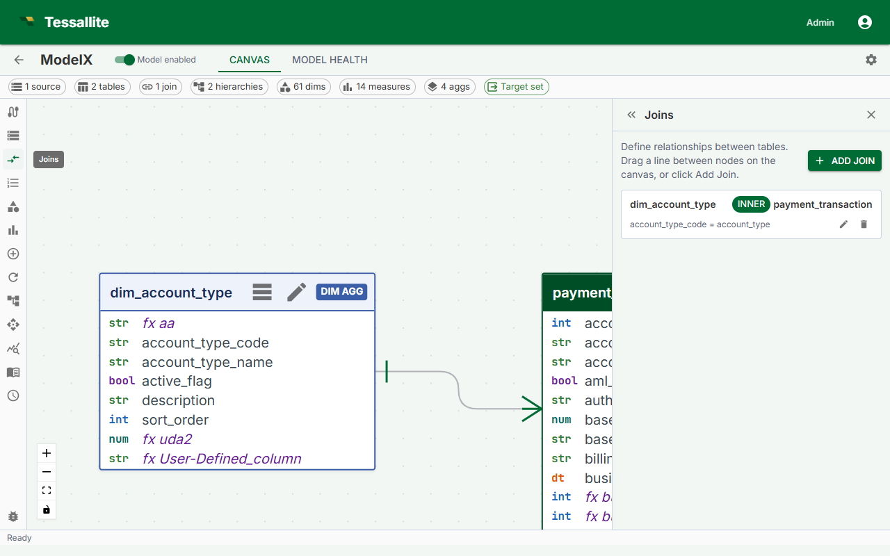

Define Joins

What this covers
Joins tell Tessallite how tables relate to one another. Without joins, the query router cannot construct the SQL needed to pull dimension attributes into aggregate GROUP BY queries. This article covers the join creation flow, join properties, when to choose INNER vs LEFT, structural constraints, and how to edit or delete a join.
Before you start
- All tables involved in a join must already be added to the model. See Add Tables to a Model.
- You must know the foreign key relationship: which column in one table corresponds to the primary key in the other.
Steps
- Open the Model Builder for the project.
- In the Toolbelt, click Add Join. Alternatively, drag from one table card to another in the Canvas.
- In the Drawer, set the Left table and Left column (the many-side, typically the fact table).
- Set the Right table and Right column (the one-side, typically a dimension table).
- Choose the Join type: LEFT or INNER.
- Click Save Join. A line appears in the Canvas connecting the two table cards, labeled with the join type.
Join properties
| Property | Description |
|---|---|
| Left table | The table on the left side of the ON clause. |
| Left column | The foreign key column in the left table. |
| Right table | The table being joined to. Typically a dimension table. |
| Right column | The primary key or join key column in the right table. |
| Join type | LEFT or INNER. Controls how unmatched rows are handled. |
INNER vs LEFT
Use LEFT in almost all cases. A LEFT join preserves every row from the fact table even when the dimension table has no matching row, preventing silent data loss if a dimension record is missing or the foreign key is null.
Use INNER only when you are certain every fact row has a matching dimension row. A misapplied INNER join produces totals lower than expected with no error message.
Every dimension table must be reachable from the fact table through a join path. A dimension table with no join connection will trigger a warning in the Health tab and cannot be used in aggregate queries.
Structural constraints
- Star or snowflake only. Joins radiate outward from the fact table. Cycles are not allowed.
- No fact-to-fact joins. Joins between two
facttables are not supported. Use two separate projects or pre-join the tables in the source. - One join per table pair. Only one join can exist between any two tables.
The Health tab shows errors for constraint violations. The model cannot be published while errors are present.
Editing a join
Click the join line in the Canvas to open it in the Drawer. Edit any property and click Save Join.
Deleting a join
Click the join line in the Canvas, then click Delete Join in the Drawer. Dimensions or measures relying on columns in the disconnected table will produce Health tab errors until the join is restored or those objects are removed.
Auto-hide of dimension join keys
When a join is created between a fact table and a dimension table, Tessallite automatically hides the dimension-side join key column. This prevents the same attribute from appearing twice in the virtual schema (once from the fact table's foreign key and once from the dimension table's primary/join key).
How it works:
| Event | What happens |
|---|---|
| Join created (fact to dimension) | The dimension table's join key column is hidden. Any dimension or measure referencing that column is also hidden. |
| Join deleted | If the column was auto-hidden (not manually set by the user), it becomes visible again. If other joins still reference the column, it stays hidden. |
| Join columns changed | The old dimension-side column is restored to visible; the new dimension-side column is hidden. |
Manual override. You can always change the visibility of any column manually. Open the table card in the Canvas, click the column, and toggle the Hidden checkbox.
- If you manually show an auto-hidden column, the system records your choice. Deleting the join later will not re-hide it.
- If you manually hide a column, creating a join through that column will not change your setting.
The auto-hide rule only applies to fact-to-dimension joins. Joins between two dimension tables (snowflake joins) do not trigger auto-hide.